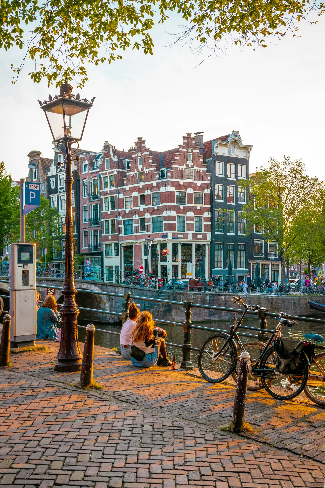
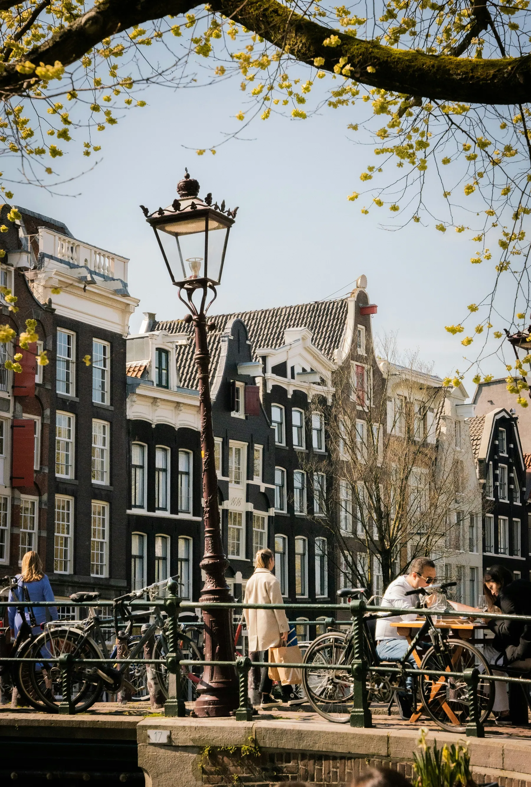
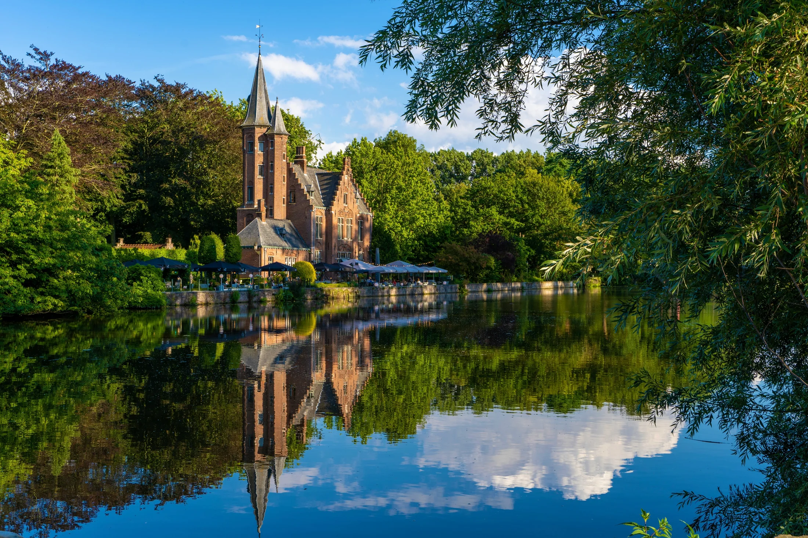
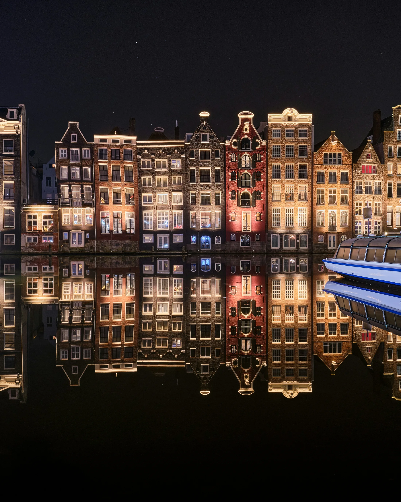
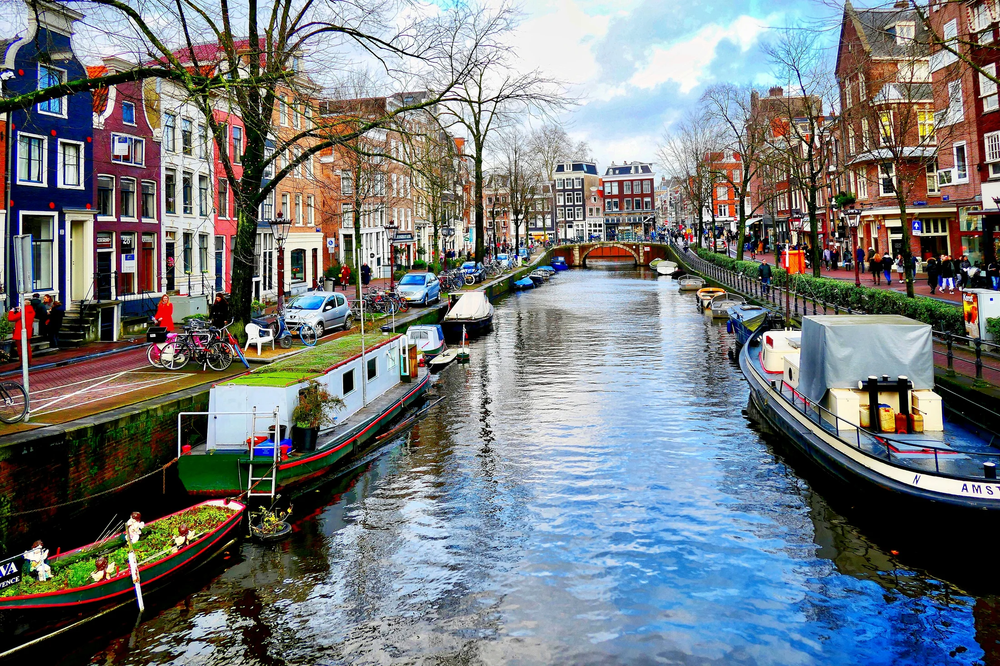
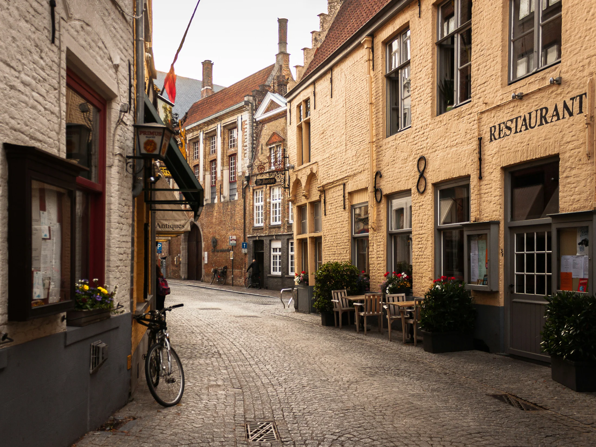

Most cities train visitors to look upward.
Paris points you toward monuments. Rome toward churches. Vienna toward palaces.
You can feel people doing it almost immediately.
Cameras come out in bursts. Someone spots a famous building at the end of the street and the whole group subtly reorients itself toward it. The city becomes a sequence of destinations connected by walking.
Amsterdam behaves differently.
Somewhere during the first afternoon, people stop photographing landmarks and start photographing ordinary streets.
A canal corner. Three bicycles beside a bridge. Windows glowing above dark water. Rows of narrow brick houses leaning slightly sideways with age.
You see guests standing completely still taking photographs of places that do not seem, technically, to be anything at all.
That shift usually happens before people understand why.

But underneath it is one of the biggest differences between the cities of the Low Countries and many other famous European capitals:
These cities were largely built by merchants.
And once you see that, it becomes difficult to unsee.
The Narrow Houses
Guests notice the houses almost immediately in Amsterdam.
Usually before they notice anything else.
“Why are they all so skinny?”
The houses along the canals rise upward in tall narrow façades, packed tightly together like books on a shelf. Some lean slightly forward. Many have hooks projecting from the gables high above the street.
People often assume the shape is simply aesthetic. Something quaint and historic that evolved accidentally over time.
But the shape reflects commerce.
Land along the canals was valuable because the canals were infrastructure. Goods moved constantly through the city by water: timber, spices, textiles, grain, ceramics, sugar.
Merchants wanted direct canal access because the canal itself was effectively the delivery network of the city.
In some periods, taxation was linked partly to the width of a property’s frontage.
So houses compressed horizontally and expanded vertically. Storage moved upward. Staircases became steep and narrow. Goods were lifted through windows using the hooks still visible above the gables today.
Even the architecture reflects commercial efficiency.

And it creates something modern visitors react to constantly without necessarily understanding it:
Visual density.
The city feels detailed at street level because prosperous urban life was compressed tightly together rather than spread outward into monumental space.
Which is why people keep photographing random sections of it.
Photographing Nothing
This is the thing I have noticed most consistently in both Amsterdam and Bruges.
People stop collecting landmarks.
In Rome, the questions are directional.
Where’s the Trevi Fountain? How do we get to the Vatican? What time should we be at the Colosseum?
Visitors move from spectacle to spectacle with a clear sense of what counts as the main thing.
In Amsterdam and Bruges the questions change.
What’s that street? Can we go down there? Is this canal still part of the centre? Do people actually live in these houses?
The city converts people from destination-seeking to atmosphere-consuming, often without them noticing the shift.
Groups spread apart because everyone keeps pausing somewhere slightly different. People follow canals simply to see what appears around the next bend.
Movement stops being purposeful and starts being curious.
The city itself becomes the attraction.
Many of the photographs people take are not really photographs of attractions at all.
They are photographs of texture.
Brickwork. Reflections. Windows. Bicycles. Trees leaning over canals. A café spilling quietly onto the street.
In imperial capitals, prosperity concentrates into focal points designed to display power: palaces, cathedrals, boulevards, government buildings.
In merchant cities, wealth spreads outward across the streetscape itself.
Successful merchants built homes. Guilds built halls. Warehouses lined canals. Entire districts became prosperous simultaneously.
The wealth is not concentrated in one palace at the end of a boulevard.
It is built into the streets themselves.

The Huge Windows
Walk through Amsterdam at night and entire interiors remain visible behind enormous windows:
Bookshelves. Dining tables. Lamps glowing above canals. Ordinary life sitting quietly in full view of the street.
The city can feel displayed rather than hidden.
This comes partly from the merchant culture that built it.
In the trading cities of the Dutch Republic, prosperity was often demonstrated through order, cleanliness and domestic stability rather than aristocratic grandeur.
Large windows admitted light into narrow canal houses, but they also projected security and success outward into the street itself.
Curtains drawn during the daytime could suggest something to hide.
The result is subtle but psychologically important.
Amsterdam often feels socially transparent in a way many cities do not.
Visitors sense this instinctively long before they understand where it comes from.

Canals as Infrastructure
The canals matter too.
Not just visually, but emotionally.
Amsterdam’s canals do not feel ceremonial in the way imperial boulevards or palace gardens often do.
They feel integrated into ordinary life.
Close. Domestic. Lived with.
That is because they were never built primarily to be admired.
They were infrastructure.
Goods moved through them constantly. Warehouses opened directly onto them. Merchants lived beside their businesses. Trade flowed through the centre of daily life itself.

Even centuries later, the canals still shape movement through the city in surprisingly intimate ways.
People walk beside them rather than merely looking at them. Cyclists cross them constantly. Cafés open directly onto them. Homes sit inches above the water.
The city feels less arranged for visitors than inhabited continuously by people going about ordinary life.
Bruges and the Strange Gift of Decline
Bruges feels slightly different again.
Softer. Quieter. Almost implausibly preserved.
Early in the morning, before most of the day visitors arrive, the city can feel almost suspended.
Delivery bicycles crossing stone bridges. Water barely moving beneath them. Church bells echoing across streets narrow enough that sound seems to linger longer than it should.
Part of the reason is unexpectedly melancholy.
Bruges did not survive intact because medieval people carefully preserved it for future tourists.
In many ways, it survived because trade moved elsewhere.
Its access to the sea declined. Commercial importance shifted toward Antwerp and later Amsterdam. Industrial modernisation arrived less aggressively than in many other European cities.
So Bruges partially froze.
The wealth remained visible in the stone façades, guild halls and market squares, but the city escaped much of the redevelopment that transformed other commercial centres across Europe.
Modern visitors experience something unusual:
A merchant city that still largely feels shaped by medieval commercial life.
That is part of why wandering through Bruges can feel strangely intimate despite the crowds.
The scale remains human. The streets still curve around old patterns of trade and movement.
The city does not feel staged.
It feels inhabited.

There is another reaction that appears constantly in Amsterdam especially.
“I could live here.”
People say it in a way they rarely say about many other famous European capitals.
Rome overwhelms people. Paris impresses people. Vienna astonishes people.
Amsterdam absorbs people.
Merchant cities were designed to function efficiently for large numbers of ordinary urban residents moving through dense commercial environments every day.
Streets connected constantly. Daily life mixed closely with business activity. Shops, homes, cafés and workplaces overlapped physically rather than separating into rigid ceremonial zones.
The result is a city that still feels scaled to ordinary life centuries later.
You give people a map, a meeting point and a few hours of free time.
Later, somebody says:
“We didn’t actually do much. We just walked around.”
In another city, that would sound like a wasted afternoon.
In Amsterdam, it usually means they got it exactly right.
← Back to From The Road